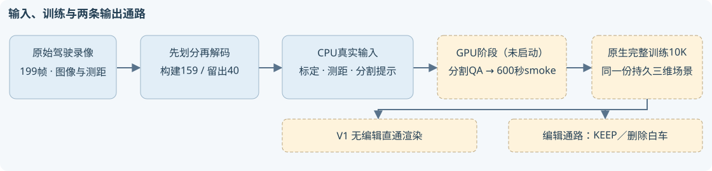
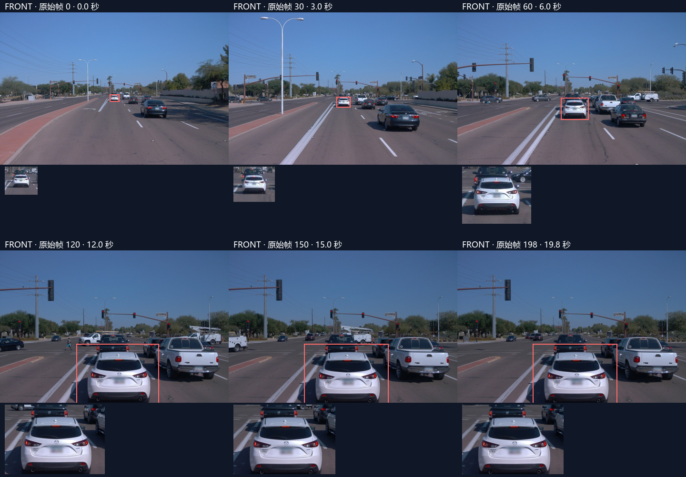
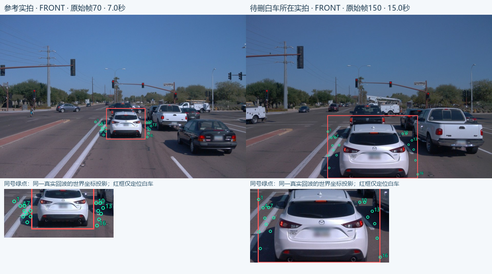

CPU准备完成 · GPU未启动删除前方白车，先看清输入与无编辑参照
这是用户指定的 Waymo 验证集 scene-065。待删除车辆是同车道正前方的白色车，右侧白色皮卡用于检查保持。它在199帧都有前相机标注，中后段明显大于上一街段的被遮挡小车。较晚时车体下缘接近或超过画面边界，因此保留早期完整入镜时刻。
159 构建帧，40 留出帧；25,929,731 个真实测距点；159/159 帧有白车测距提示。 留出原始帧79–118未解码为训练图像或点云，也未参与分割提示与背景搜索。

原始观测快览

本仓库保存报告、稀疏证据及源码。159帧逐帧版保留在用户工作区outputs/waymo_val065_preparation/index.html；完整RGB、测距及构建输入保留在仓库外CPU目录，不复制进Git。
“完整重建”采用无编辑直通
同一份构建观测从头训练原生完整场景10K，直接调用原渲染器输出。该参照绕过对象重绑、恢复车辆插入、道路补片和图像拼接。原生重建、当前方法保留场景和删除白车分别保存，不能用编辑后的KEEP结果冒充直通参照。seed=0，学习率仍沿用30K时钟，正式更新在10K停止，smoke另记。
scene-029 已有这一独立原生10K运行。本轮确认79个构建时刻的KEEP与删红车共158张原PNG，已分别接入现有子页。另10个留出时刻的旧导出经过共享归属与行打包，已从V1列排除并留空，需要GPU另行直通导出；没有为展示重复训练，也没有把原生删车称为无编辑上限。
背景显露证据仍需分割核验
搜索只使用构建时刻的原始测距点。先检查参考时刻的相机深度与其他框遮挡，再把同一个世界坐标点投回白车所在位置。稀疏提名最多（不等于已确认的显露支持）的是查询帧150、参考帧70，共174个回波、171个两像素格。 抽样图中不少点落在车体两侧，框内投影不能证明被车身遮挡。这些近地回波尚未通过白车真实轮廓和道路语义核验，不能作为独立删除真值。白车前方深色车辆的完整表面对应也尚未确认。

进入GPU阶段之前已固定什么
| 项 | 固定内容 |
|---|
| 目标与保持 | 前方白车a9删除；右侧白色皮卡a7保持，原始轨迹作为映射键。 |
| 数据 | 原始前相机1920×1280；拟合/渲染480×320；159构建帧、40连续留出帧。 |
| 分割与smoke | 先核验30/60/150/198四帧，再补齐全构建帧分割；600秒真实smoke必须覆盖保存、评价、精确恢复和下一阶段入口。 |
| 正式预算 | fresh10K，无旧checkpoint；原生无编辑直通与删除查询分开，额外恢复/补路计算另记。 |
| 尚缺 | 实例与天空/道路语义掩码、GPU接线验收、真实删除结果；本轮均未生成。 |
原始身份与可重跑资料
context：15021599536622641101_556_150_576_150
白车a9：NTjq-OhZ_97OMJ4xwJAxXg
皮卡a7：KOsYCOB6W_n0DzZsyDdJ-w
冻结合同 · CPU验收 · 背景候选 · 目标逐帧登记
本页只核验输入，没有跨场景编辑成功或人工质量验收。完整数据在远端隔离目录，本地保留元数据、提示和影像证据。